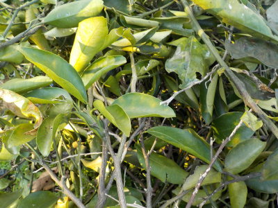
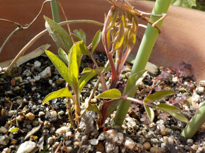
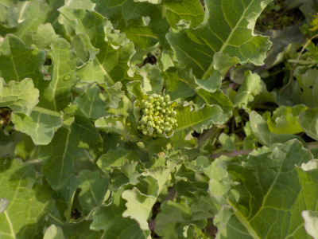

遊びで植物を育てよう
2019/02/23
みかん系の木を剪定しました。
柑橘系をいろいろ剪定しました。

いままであまり剪定していなかったので、枝が込み合ってる箇所が多くありました。
みかんはあまり切らない方がいいと何かにあったと思うんですが、切り出すと「これいらない、これも邪魔」って沢山切ってしまいました。
【2月TOP】 【日記TOP】 【園芸TOP】
2019/02/23
クレマチスの芽が出ていました。
こんな感じで芽が出るんですね。

葉っぱがいっぱいあるので、早く大きくなりそう。
【2月TOP】 【日記TOP】 【園芸TOP】
2019/02/10
寒さでサボテンが赤くなっていました。
屋外に置いてたサボテンが少し赤くなっていました。
本当は緑色です。

そのままでも冬は越せると思うんですが、元気に越したことはないので屋内に入れました。
どれくらいで緑に戻るかな。
【2月TOP】 【日記TOP】 【園芸TOP】
2019/02/10
あすっこの収穫
あすっこは作るのが簡単でいいですね。

癖がないので料理するのも簡単でいいかな。
【2月TOP】 【日記TOP】 【園芸TOP】
過去の日記
【2018年2月の日記】
【2017年２月の日記】
【2016年2月の日記】
【2015年2月の日記】
【2014年2月の日記】
【2013年2月の日記】
【2月TOP】
【日記TOP】
【園芸TOP】
畑仕事じゃないよ。
【おいしいものを食べよう。】【しっかり寝よう。】
【ソロ活をしよう!】【季節感のあることをしよう。】【動画視聴はほどほどに。】【当サイトの全てのコンテンツは無断転載禁止です。】